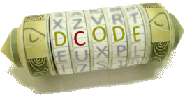
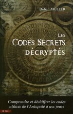
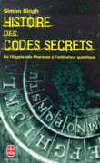
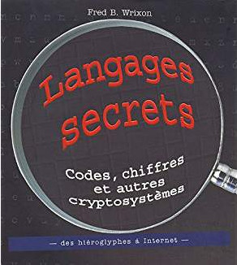

<div id="pageDiscover" class="pageContent">
   <div class="defaultText">
      <h1>Découvrir la cryptanalyse</h1>
      <div class="section">
         <h3>Pour découvrir la crypatnalyse, nous vous proposons trois documents introductifs  : </h3>
         <ul>
            <li> <a target="new" href="docs/intro_crypto.pdf">Quelques méthodes de chiffrement</a>;</li>
            <li> <a target="new" href="docs/olympiades.pdf">La cryptographie et les mathématiques</a>; </li>
            <li> <a target="new" href="docs/crypto_moderne.pdf">La Cryptologie moderne</a>. </li>
         </ul>
      </div>
      <div class="section">
         <h3>Par ailleurs, pour poursuivre votre découverte, nous vous proposons les sites suivants :</h3>
         <div class="row">
            <div class="col one-half">
               <p class="txtcenter"><a href="http://www.dcode.fr" target="_blank"><br/>http://www.dcode.fr</a></p>
            </div>
            <div class="col one-half">
               <p class="txtcenter"><a href="http://www.apprendre-en-ligne.net/crypto" target="_blank"><br/>http://www.apprendre-en-ligne.net/crypto</a></p>
            </div>
         </div>
      </div>
      <div class="section">
         <h3>Nous vous conseillons également les ouvrages suivants :</h3>
         <ul class="three-cols-list">
            <li>
               
               <p>"Les codes secrets décryptés" par Didier Müller aux éditions City-Editions
               <br />(ISBN : 2-35288-041-6)</p>
            </li><li>
               
               <p>"Histoire des codes secrets" par Simon Singh aux éditions Livre de poche<br/>(ISBN : 978-2-253-15097-8)</p>
            </li><li>
               
               <p>"Langages secrets" par Fred B.Wrixon aux éditions Könemann<br />( ISBN : 3-8290-3889-5)</p>
            </li>
         </ul>
      </div>

      <div class="section">
         <h3>Voici quelques ressources en anglais :</h3>
         <ul>
            <li><a href="http://www.cryptool-online.org" target="_blank">http://www.cryptool-online.org</a></li>
            <li><a href="http://www.practicalcryptography.com" target="_blank">http://www.practicalcryptography.com</a></li>
            <li><a href="http://www.geocachingtoolbox.com" target="_blank">http://www.geocachingtoolbox.com</a></li>
         </ul>
      </div>
      <div class="section">
         <h3>Découvrez la machine Enigma</h3>
         <p>Pour apprendre l'histoire de la machine Enigma, vous pouvez regarder la vidéo de la chaîne Science4all ou consulter les slides de l'exposé présenté<a href="docs/cryptanalyse_enigma.pdf"> ici</a>. Un <a href="http://images.math.cnrs.fr/La-machine-Enigma.html">article</a> d'Images des maths présente la cryptanalyse d'Enigma par trois mathématiciens polonais.</p>
         <div class="txtcenter mtl">
            <iframe width="560" height="315" src="https://www.youtube.com/embed/Ad5cReHm4Mw" frameborder="0" allowfullscreen></iframe>
         </div>
      </div>
      <div class="section">
         <h3>Essayez !</h3>
         <p>Et bien sûr nous vous invitons à refaire les épreuves du premier tour des éditions 2015 et 2016 sur <a href="http://epreuve.concours-alkindi.fr" target="_blank">epreuve.concours-alkindi.fr</a> et à consulter les solutions.</p>
      </div>
   </div>
</div>
